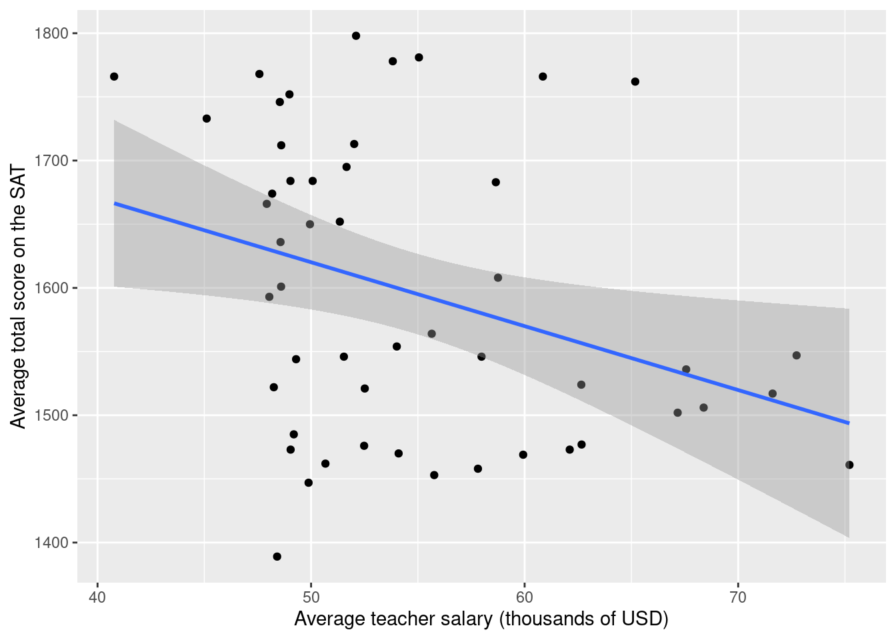
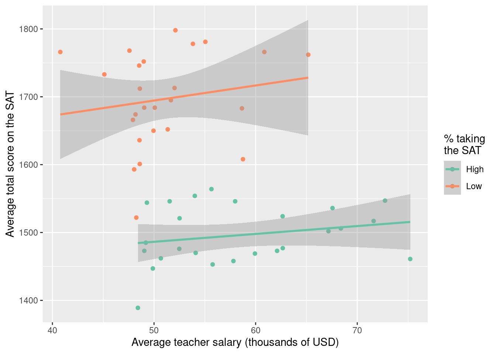

credit <- read_csv("data/credit.csv")Homework 3
Due: Friday September 25 at 10 AM
This homework will give you a workout with all of the linear regression ideas we’ve studied so far.
Setup
- Log-in to your container;
- Double-check that you have the
sta101-f26-filesproject loaded in the upper-right corner of RStudio (this should always be true); - Go to the “Git” tab in the upper-right panel of RStudio and click the Pull button (arrow pointing down). Now the new assignment template and dataset should appear in the
hwfolder of your Files; - At the top of the new
.qmd, in between---, you have the settings for the document (the so-called YAML, but don’t worry about that). Modify theauthorso that it lists lil’ ol’ you.
Exercise 0
Recommend some music for us to listen to while we grade this.
Part 1: credit cards
In this part you will analyze a small dataset on personal finances:
Each row is an American adult, and the variables are as follows:
| Variable | Description |
|---|---|
balance |
Credit card balance in $ |
income |
Income in $1,000 |
student_status |
Whether the individual is a student (Student) or not (Not student) |
marriage_status |
Whether the individual is a married (Married) or not (Not married) |
limit |
Credit limit |
marriage_student |
4-level categorical variable that mixes and matches marriage and student status |
Our goal is to understand how well a person’s income predicts their credit card balance, and we want to know how this relationship varies according to the person’s marriage and student status.
Exercise 1 (visualize and summarize)
- Create a scatter plot visualizing
incomeandbalance, and include on your scatter plot the least squares line; - Write a single data pipeline that computes:
- The means and standard deviations of the two variables;
- The correlation between the two variables;
- The slope and intercept of the least squares line in your plot. You should do this using the formulas from lecture that involve the five summaries above.
Exercise 2 (simple linear regression)
- Use the commands from
tidymodelsto fit the simple linear regression model that predictsbalancefromincome. Make sure you store this model fit by giving it a useful name. Then display the regression output and verify that your slope and intercept estimates are the same as the ones from the previous exercise; - Interpret the slope and the intercept estimates, and comment about whether or not the intercept estimate is meaningful in the context of the application.
Exercise 3 (“simple” linear regression)
- Fit the linear model that predicts
balancefrommarriage_studentonly. Make sure you store this model fit by giving it a useful name. Then display the regression output; - Interpret the coefficient estimates in this model;
- In a single pipeline, compute the average
balancewithin each level ofmarriage_student. Do these averages agree with the estimates from the model you just fit?
Exercise 4 (multiple linear regression 1)
- Fit the additive model that predicts
balancefromincomeandmarriage_student. Make sure you store this model fit by giving it a useful name. Then display the regression output; - Interpret the coefficient estimates in this model;
- What credit card balance does this model predict for a married non-student whose income is $70,000?
Exercise 5 (multiple linear regression 2)
- Create a scatter plot visualizing
incomeandbalance. Color the points on the scatter plot according to the levels ofmarriage_student, and add to the plot a different best fit line for each of those groups; - Fit the interaction model that predicts
balancefromincomeandmarriage_student. Make sure you store this model fit by giving it a useful name. Then display the regression output; - Interpret the coefficient estimates in this model.
Exercise 6 (selection)
You just fit four separate models, but each one is meant to predict the same response variable: credit card balance. Which of these four models is “best”? Please provide a thorough explanation of why you made your choice.
Part 2: think about it
This exercise does not require code, but you should type your responses into the same Quarto file you’ve been using. Make sure to answer the question in full sentences.
Exercise 7
Imagine we wish to study the relationship between the salary of high school teachers and the SAT scores of their students. So we collect data on a bunch of schools, and for each school we record average teacher salary and average SAT score, as well as a categorical variable indicating whether taking the SAT is common or not at that school.
As we saw, there are many models that we could fit in an attempt to summarize the relationship. Here are two:


How do these model fits differ? Can you speculate about why they differ? Which of these two models do you think is more appropriate for faithfully describing the relationship?
Submission
- Hit the blue Render button to generate your final PDF;
- Give your work a final look over to double-check a few things:
- that your code is stylish;
- that none of your code or pictures runs off the page. We cannot grade what we cannot read;
- that all of your plots are well-labeled and human-readable. In other words “Flipper length (mm)” instead of
flipper_length_mm; - If your work is lacking on any of these items, fix them and re-render as needed;
- Download the PDF from your container;
- Upload it to Gradescope;
- Don’t forget to mark your pages.